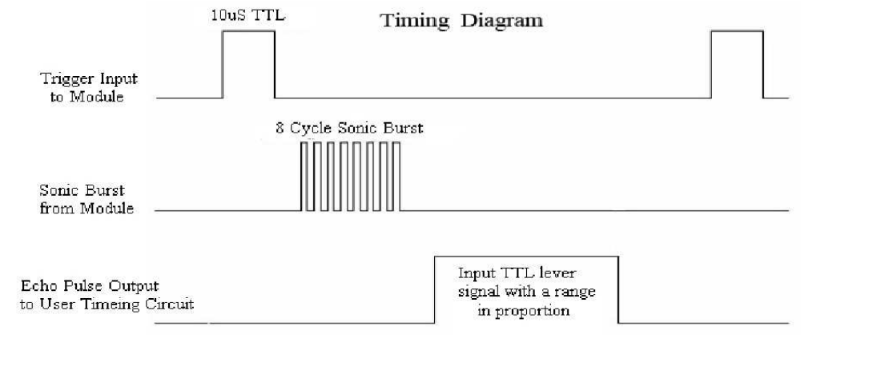
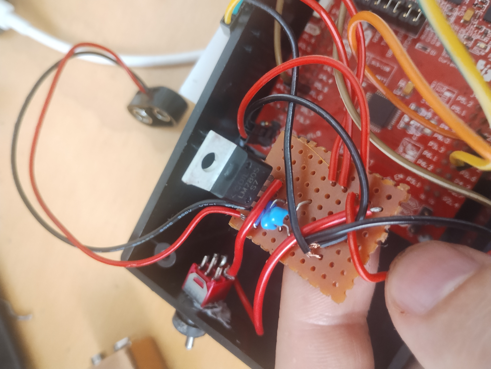

Basketball Shot Tracker
Concept
The main idea was to attach a portable device to the base of the hoop with a sensor. Having the basketball go through the hoop would trigger the sensor and update the amount of shots made. Design is to be as portable as possible and self operating, only requiring an on/off input from the user.
Production
Main Components
HC-SR04 Ultra Sonic Sensor
HT16K33 14 Segment LED display
MSP430FR20476 Launch Pad
Distance sensor
I opted for an ultra sonic sensor HC-SR04 for this prototype due to it relative ease to implement. According to its datasheet to read a distance from it requires the following timing.
First I set variables for the duration and 'shots made', and assigned the GPIO pins.
volatile int duration = 0;
int shots = 0;
WDTCTL = WDTPW | WDTHOLD; //disable watch dog
P1DIR |= BIT0; // trig OUTPUT
P2DIR &= ~BIT0; // echo INPUT
P1DIR |= BIT1; // distanceLED
PM5CTL0 &= ~LOCKLPM5; // enable GPIO pins
Then referring to the timesheet I sent the pulse, waited for the echo signal high, then waited for the echo signal low, storing the duration (10us count).
while (1) {
// Send trigger pulse
P1OUT |= BIT0;
__delay_cycles(10); // 10us pulse
P1OUT &= ~BIT0;
while (!(P2IN & BIT0)) {
} // wait for echo signal
// Measure how long echo stays HIGH (this is the pulse width)
duration = 0;
while ((P2IN & BIT0)) {
duration++;
__delay_cycles(10);
}
If the duration is below arbitrary threshold, turn on a led, increment the shots delay for a second to avoid multiple reads. Turn the LED off if the distance threshold is not met on the next cycle.
// check if distance is close to sensor
if (duration < 40) {
P1OUT |=BIT1;
shots++;
__delay_cycles(1000000);
} else {
P1OUT &=~BIT1;
}
__delay_cycles(60000);
Testing the sensor all seems to work.

Next was to refactor the code. This time instead of multiple delays, I opted to use a state machine with IO and timer interrupts. First I set up a header file, storing some constants and the state machine.
#define SHOT_TRIGGER 2000
#define MEASURE_CYCLE 60000
#define PULSE_WIDTH 10
#define SHOT_COOLDOWN 1000000
typedef enum {
STATE_SENDING_PULSE,
STATE_ECHO,
STATE_ECHO_RECEIVED,
STATE_SHOOTING_COOLDOWN,
STATE_COOLDOWN
} system_state;
Assign variables to track the echo duration, measurement delay and state machine
volatile unsigned int echo_start = 0;
volatile unsigned int echo_end = 0;
volatile unsigned int delay_start = 0;
volatile unsigned int delay_cur = 0;
volatile system_state current_state;
unsigned int shots = 0;
void init_timer(void) {
// general clock to replace delays
TA0CTL = TASSEL__SMCLK + MC__CONTINUOUS + TACLR;
// Timer interupt to trigger when after shot cooldown
TA1CTL = TASSEL__ACLK | MC__STOP | TACLR;
TA1CCR0 = 50000;
TA1CCTL0 = CCIE;
TA1CCTL0 &= ~CCIFG;
}
void init_gpio(void) {
P1DIR |= BIT0; // P1.0 = Trig (OUTPUT)
P1DIR |= BIT1; // P1.1 = Distance LED (OUTPUT)
P1OUT = 0x0000;
P2DIR &= ~BIT0; // P2.0 = Echo (INPUT)
P2IES &= ~BIT0; // Interrupt on rising edge (echo starts)
P2IE |= BIT0; // Enable interrupt on P2.0
P2IFG &= ~BIT0; // Clear interrupt flag
PM5CTL0 &= ~LOCKLPM5;
}
void send_trigger(void) {
P1OUT |= BIT0;
__delay_cycles(PULSE_WIDTH); // 10us pulse (still need this short delay)
P1OUT &= ~BIT0;
current_state = STATE_ECHO;
delay_start = TA0R;
}
int main(void) {
WDTCTL = WDTPW | WDTHOLD; // Stop watchdog timer
init_timer();
init_gpio();
__enable_interrupt(); // Enable global interrupts
current_state = STATE_SENDING_PULSE;
while (1) {
switch (current_state) {
case STATE_SENDING_PULSE:
send_trigger();
break;
case STATE_ECHO:
_BIS_SR(LPM0_bits + GIE);
__attribute__((interrupt(PORT2_VECTOR))) void port_2_isr(void) {
if (P2IFG & BIT0) {
if (P2IES & BIT0) {
// Falling edge - echo pulse ended
echo_end = TA0R; // Capture timer value
current_state = STATE_ECHO_RECEIVED;
P2IES &= ~BIT0; // Switch to rising edge for next measurement
_BIC_SR_IRQ(LPM0_bits);
} else {
// Rising edge - echo pulse started
echo_start = TA0R; // Capture timer value
P2IES |= BIT0; // Switch to falling edge detection
}
P2IFG &= ~BIT0; // Clear interrupt flag
}
}
case STATE_ECHO_RECEIVED:
if ((echo_end - echo_start) < SHOT_TRIGGER) {
P1OUT |= BIT1; // Turn on LED
shots++;
TA1CTL |= MC__UP | TACLR;
current_state = STATE_SHOOTING_COOLDOWN;
} else {
P1OUT &= ~BIT1; // Turn off LED
delay_start = TA0R;
current_state = STATE_COOLDOWN;
}
break;
case STATE_SHOOTING_COOLDOWN:
_BIS_SR(LPM0_bits + GIE);
break;
case STATE_COOLDOWN:
write_num(shots);
delay_cur = TA0R;
if ((delay_cur - delay_start) > MEASURE_CYCLE ||
delay_cur < delay_start) {
current_state = STATE_SENDING_PULSE;
}
break;
__attribute__((interrupt(TIMER1_A0_VECTOR))) void timer1_overflow(void) {
if (current_state == STATE_SHOOTING_COOLDOWN) {
delay_start = TA0R;
current_state = STATE_COOLDOWN;
TA1CTL = TASSEL__ACLK | MC__STOP | TACLR;
}
_BIC_SR_IRQ(LPM0_bits);
TA1CCTL0 &= ~CCIFG;
}
14 Segment display with i2c Protocol
In order for the shot amount to diplay on a 14 segement diplay I used a module that was built for arduino, so wrote a costom driver for the MSP430 obased off Ada Fruit LED Backpack Library.In the header file I set addresses for instructions on the modules chip
#define HT16K33_ADDR 0x70 // Default I2C address
#define HT16K33_ON 0x21 // Turn on oscillator
#define HT16K33_STANDBY 0x20 // Turn off oscillator
#define HT16K33_BLINK 0x80 // Display setup register
#define HT16K33_BRIGHT 0xE0 // Brightness register
void I2C_init(void) {
P1SEL0 |= BIT2 | BIT3; // P1.2=SDA, P1.3=SCL
P1SEL1 &= ~(BIT2 | BIT3);
UCB0CTLW0 |= UCSWRST; // Software reset enabled
UCB0CTLW0 |= UCMODE_3 | UCMST | UCSSEL__SMCLK; // I2C master mode, SMCLK
UCB0BRW = 10; // Baudrate = SMCLK/10 = 100kHz
UCB0CTLW0 &= ~UCSWRST; // Clear SW reset, resume operation
}
void I2C_write(uint8_t addr, uint8_t *data, uint8_t len) {
UCB0I2CSA = addr; // Set slave address
UCB0CTLW0 |= UCTR | UCTXSTT; // Transmitter mode, START condition
while (!(UCB0IFG & UCTXIFG0))
; // Wait for TX buffer ready
for (uint8_t i = 0; i < len; i++) {
UCB0TXBUF = data[i]; // Load TX buffer (8-bit write)
while (!(UCB0IFG & UCTXIFG0))
; // Wait for TX
}
UCB0CTLW0 |= UCTXSTP; // Generate STOP condition
while (UCB0CTLW0 & UCTXSTP)
; // Wait for STOP
}
void HT16K33_init(void) {
uint8_t cmd;
uint8_t display_buffer[17] = {0};
// Turn on oscillator
cmd = HT16K33_ON;
I2C_write(HT16K33_ADDR, &cmd, 1);
// Turn on display, no blinking
cmd = HT16K33_BLINK | 0x01;
I2C_write(HT16K33_ADDR, &cmd, 1);
// Clear display RAM
display_buffer[0] = 0x00; // Start at address 0
I2C_write(HT16K33_ADDR, display_buffer, 17);
}
void write_num(int n) {
uint8_t buffer[3];
uint8_t digits[4];
uint8_t digit_count = 0;
int temp = n;
if (n == 0) {
digits[0] = 0;
digit_count = 1;
}
while (temp > 0) {
digits[digit_count] = temp % 10;
temp /= 10;
digit_count++;
}
for (int i = 0; i < digit_count; i++) {
buffer[0] = 6 - (2 * i);
switch (digits[i]) {
case 0:
buffer[1] = 0b00111111;
buffer[2] = 0b00001100;
break;
case 1:
buffer[1] = 0b00000110;
buffer[2] = 0b00000100;
break;
case 2:
buffer[1] = 0b11011011;
buffer[2] = 0b00000000;
break;
case 3:
buffer[1] = 0b10001111;
buffer[2] = 0b00000000;
break;
case 4:
buffer[1] = 0b11100110;
buffer[2] = 0b00000000;
break;
case 5:
buffer[1] = 0b11101101;
buffer[2] = 0b00000000;
break;
case 6:
buffer[1] = 0b11111101;
buffer[2] = 0b00000000;
break;
case 7:
buffer[1] = 0b00000001;
buffer[2] = 0b00010100;
break;
case 8:
buffer[1] = 0b11111111;
buffer[2] = 0b00000000;
break;
case 9:
buffer[1] = 0b11101111;
buffer[2] = 0b00000000;
break;
}
I2C_write(HT16K33_ADDR, buffer, 3);
}
}
Prototype Assembly
with the sensor and driver for the LED made, I simply called the driver functions from each appropiate spot in the state machine. Which had a number diplay each time the sensor was triggered

To make the tracker portable I wired up a 5 volt regulator to power the controller, sensor and diplay with a 9 volt battery
And installed a switch to power the device.

Mounting magnets to the back, I tested the device which seemed to work.

Review
This was a successful project that met the criteria of the design goals, device is portable, robust and reliable. Implementing the sensor timer was relativity easy, most of the time and effort was made getting the LED driver up and running with the i2c protocol.Issues with the device is that it only works on hoops with out a net, also I could increase reliability of the shot tracking by maybe opting for a laser sensor. Other improvements could be blue tooth connection to a phone to track progress, and maybe determine 3 point and 2 point shots.